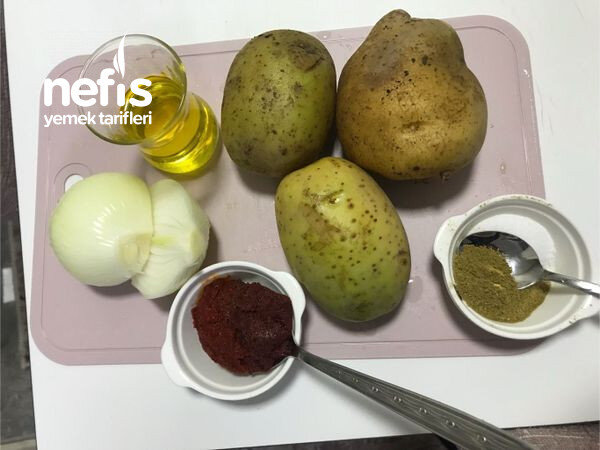

🍽️ 12-14 kişilik⏱️ Hazırlık: 15 dk🔥 Pişirme: 25 dk🏷️ Hamur İşi Tarifleri🏷️ Poğaça Tarifleri
Malzemeler
- Yarım paket eritilmiş margarin
- 1 su bardağı (200 ml) zeytinyağı
- 1 su bardağı yoğurt
- 1 adet yumurtanın beyazı ( sarısı üzerine sürülecek)
- 1 paket kabartma tozu
- 1 tatlı kaşığı tuz
- 1 adet soğan
- 3-4 adet patates
- 1 tatlı kaşığı kimyon
- Tuz
- 1 yemek kaşığı salça
- Yarım çay bardağı kadar zeytinyağı
Hazırlanışı
- Önce patatesleri haşlıyoruz.
- Soğanı rendeleyip zeytin yağında kısık ateşte pembeleşene kadar kavuruyoruz.
- Salça, kimyon, tuz ilave ediyoruz.
- Patatesleri rendeleyip soğan karışımıyla iyice karıştırıyoruz.İç malzememiz hazır.
- Erimiş margarin, sıvı yağ, yoğurt, yumurta beyazı, karbonat, tuzu alabildiği kadar un ile orta yumuşaklıkta hamur hazırlıyoruz.
- Hamuru iki eşit parçaya ayırıyoruz.(5-10 dakika dinlendirebiliriz vaktimiz varsa).
- İlk hamuru tepsi büyüklüğünde açarak yağlı kağıt serilmiş tepsiye yerleştiriyoruz.
- Üzerine iç malzemeyi eşit şekilde yayıyoruz.
- Diğer hamuru da tepsi büyüklüğünde açarak poğaçanın üzerine kapatıyoruz.
- Üzerine yumurta sarısı sürüyoruz.
- İstenirse susam serpeleyerek 180 derece fırında ( tercihen önceden 5 dakika kadar ısıtılmış) 20- 25 dakika kontrollü pişiriyoruz.
- İlk sıcaklığı çıktıktan sonra istediğimiz zaman, istediğimiz büyüklükte keserek servis yapıyoruz.